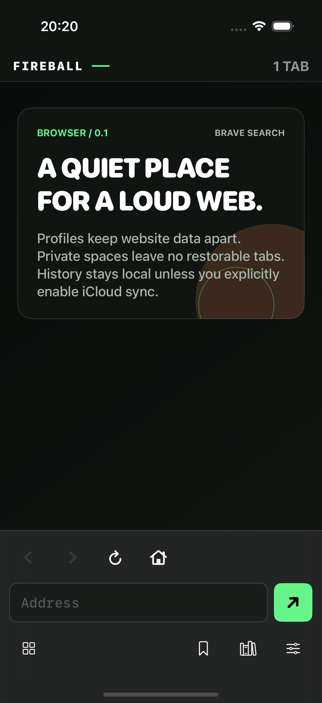
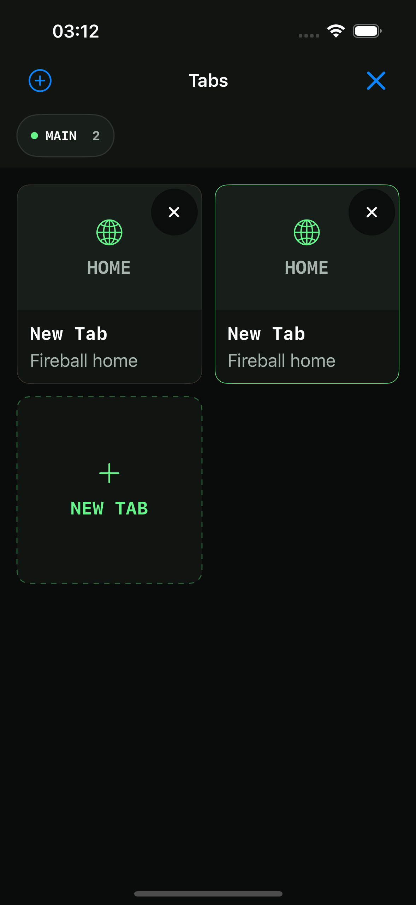
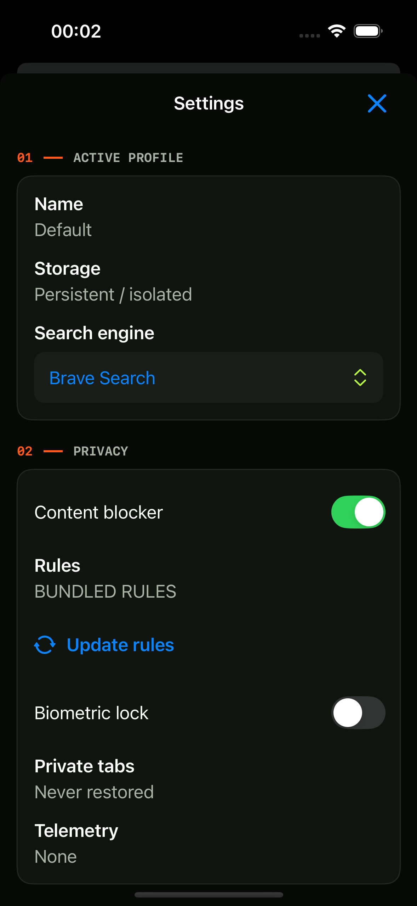
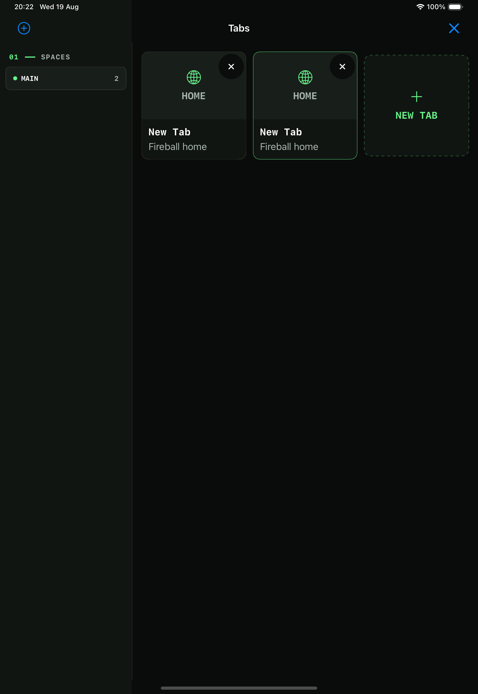
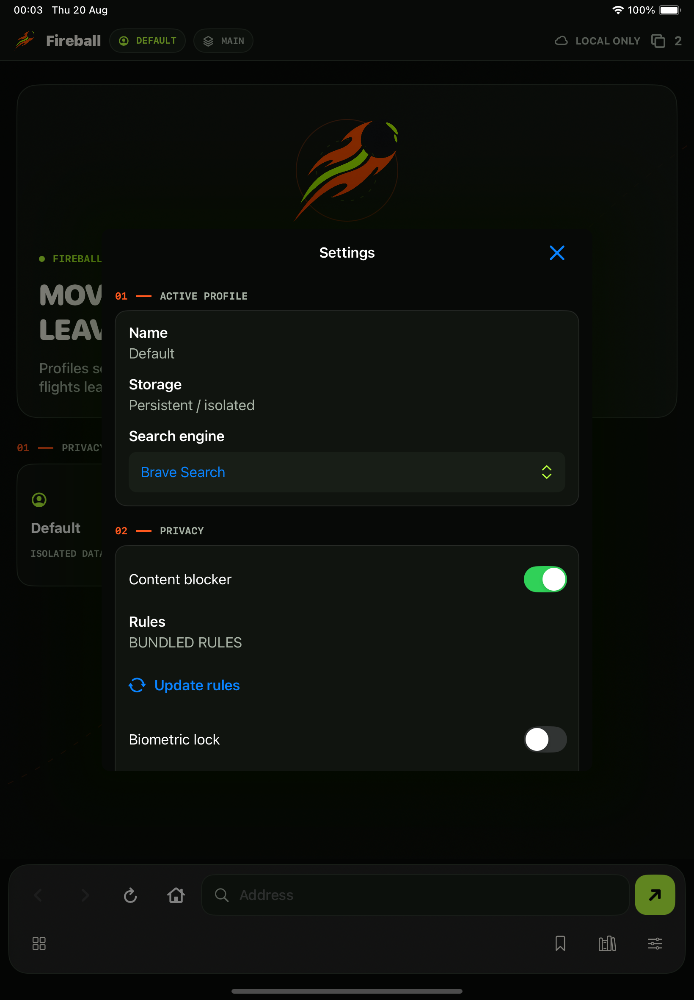
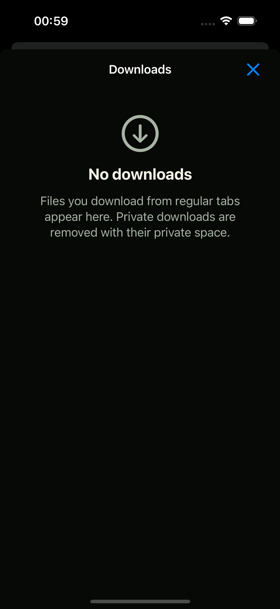
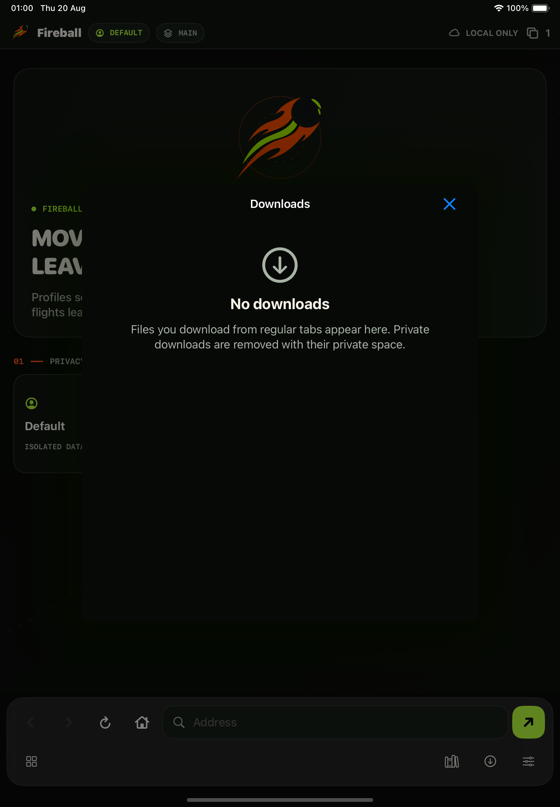

Native WebKit · iOS and iPadOS 18+
Browse in your own spaces.
Fireball is a native browser shell that keeps profiles separate, makes private tabs temporary, and collects no product telemetry.
Isolated profilesEach regular profile uses its own persistent WebKit website data store.
Private by designPrivate spaces are nonpersistent and disappear instead of joining session restore.
Signed blocker dataRule updates are verified and compiled before replacing the last-known-good set.
Native downloadsWKDownload powers a transfer tray with progress, resume, Files access and private cleanup.
Built and captured on Simulator
One shell, two form factors.
The images below come from the opt-in XCTest documentation flow on iOS 18.6, not from hand-authored device mockups.






